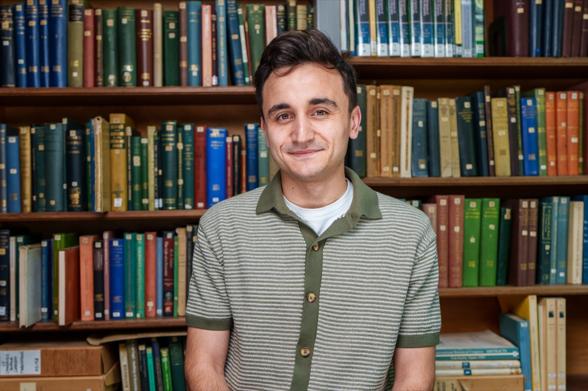
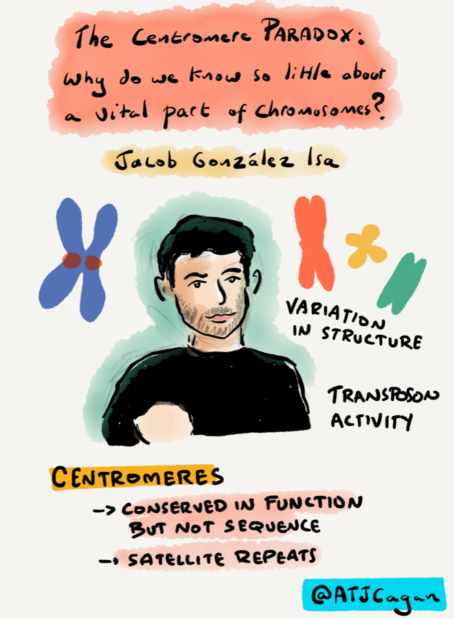
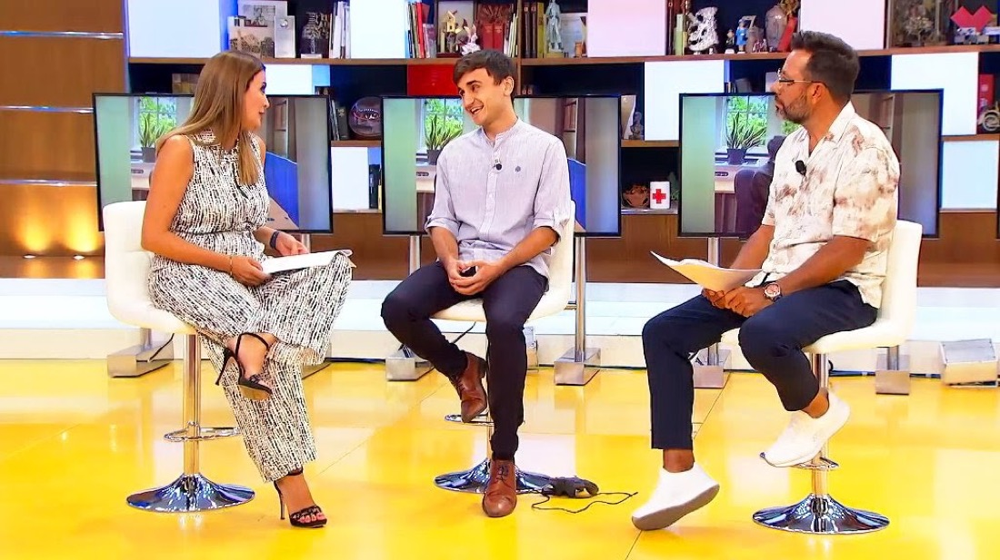

Jacob González Isa
PhD student, Department of Plant Sciences, University of Cambridge
I work on centromeres in the Henderson lab, supported by a "la Caixa" Foundation fellowship. I'm a member of King's College.
Most of my time goes into long-read sequencing and comparative genomics, with some wet-lab work on the side (Pore-C, IP–MS, Nanopore).

Research
Centromeres are the part of the chromosome that gets pulled on when a cell divides. If that goes wrong, cells end up with the wrong number of chromosomes, which is linked to cancer and infertility. You'd expect a region that important to be conserved. It isn't: centromeric DNA is mostly repeats, and it gets rewritten quickly between species. This is known as the centromere paradox, and it's what my PhD is about.
On the computational side I use long-read genomes, phylogenomics, comparative and 3C genomics, and protein language models. A lot of the work ends up being writing tools to measure things that couldn't easily be measured before.

Projects
-
Cyclical evolution of centromeres · in review, 2025
Comparing centromeres across 193 eukaryotes, we see a repeating pattern rather than random drift: satellite arrays expand, homogenise, get invaded by transposons, collapse, and start again.
-
DToL Centromere Atlas · web tool
An interactive tree of 325 Darwin Tree of Life species showing centromere type, satellite repeats and transposon content for each.
-
CHARLA · Nextflow pipeline
Finds crossover breakpoints in single long reads from hybrid Arabidopsis pollen using k-mers, including inside the centromere.
-
Pore-C pipeline · wet lab + analysis
Long-read chromosome conformation capture, used to look at how centromeric DNA folds in the nucleus.
-
Enzyme mining from metagenomes · MSc thesis, 2024
Phylogenomic search for functional enzyme variants in metagenomic data. Won first place at the EELISA student competition in Budapest.
-
HiFi assembly tutorial · teaching
A step-by-step walkthrough of assembling a genome from PacBio HiFi reads.
Education
- 2024–PhD, University of Cambridge. "la Caixa" Foundation fellow.
- 2023–24MSc Computational Biology, Madrid. Thesis in the Huerta-Cepas lab at CBGP.
- 2023Research internship, ISTA, Vienna (Friml lab). CRISPR in Marchantia.
- 2022Amgen Scholar, University of Cambridge (Henderson lab).
- 2021–22Erasmus year, Turin.
- 2019–23BSc Biochemistry, University of Seville.
I was the first in my family to go to university.
Press

- A scientist from Seville at Cambridge · ABC, 2025 (feature series, around a million views across social)
- "They study in Cambridge" · RNE, Españoles en el exterior
- "The new voices of science" · El Diario Montañés, front page, 2024
- "Bioinformatics, Spain and I" · Open Bioinformatics Foundation blog, 2024
- Postgraduate study abroad with a "la Caixa" fellowship · University of Seville
Other things
- Red Pioneros · founder and president
A non-profit that helps first-generation and working-class students get into university.
- Nucleate Spain · co-managing director
The Spanish chapter of Nucleate, a community for people turning biology research into companies.
- Tea Phytologist · co-founder and editor
Plant Sciences' student satirical journal, which we brought back after 40 years.
Some recognition along the way: Nova 111 list of top-10 Spanish bioscientists, the Extraordinary End-of-Degree Award at Seville, a Rafael del Pino fellowship (declined), and third place in the Portuguese Bioinformatics League.
Contact
Happy to talk about genome evolution, centromeres, phylogenomics or long-read methods. Email me at jg2070@cam.ac.uk or jacobgisa17@gmail.com. Everything else is on Linktree.